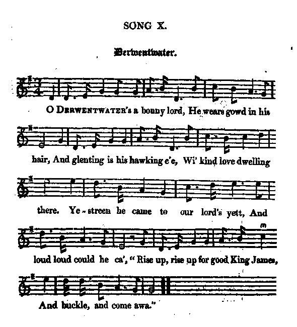
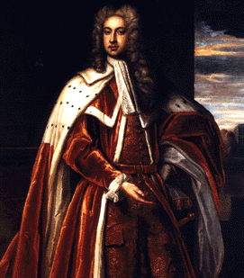
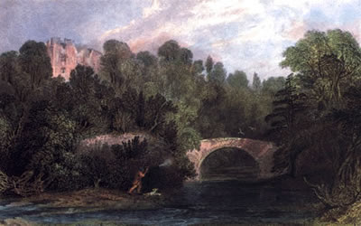
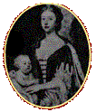
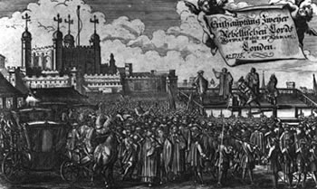

Derwentwater
Two songs on the 1716 Northumbrian Insurrection
1° Derwentwater's a bonny Lord
Ascribed to Allan Cunninghamfrom Robert Hartley Cromek's "Remains of Nithsdale and Galloway song", page 129, 1810
2° Lord Derwentwater's Goodnight (Farewell to pleasant Dilston Hall)
Ascribed to Robert Surteefrom James Hogg's "Jacobite Relics" Volume II, 1821
Tune - Mélodie
"My dear and only love, take heed"
Sequenced by Ch.Souchon
Variant
"The Battle of Otterb(o)urn(e)"
sequenced by Lesley Nelson-Burns (cf. Links)

|
To the tune:
J. Collingwood Bruce and John Stokoe in "Northumbrian Minstrelsy" (1882) published the 2nd song with music under the title "Derwentwater's Farewell" with this comment: "The tune to which this ballad is set is of considerable antiquity. It originally appears - in the 'Commonplace Book' of John Gamble (a musical composer), dated 1659, under the title of 'My Dear and Only Love Take Heed. " Numerous songs more or less popular have been written to it from that date to later times; amongst others being the song written by the celebrated James Graham, Marquess of Montrose , commencing: My dear and only love I pray, This noble word of thee.' This song made the tune very popular in Scotland, where it often appears in collections under the title of 'Montrose Lynes.' Oswald, in his 'Collection of Scottish Airs,' 1781, inserts this melody, but gives it as the tune to which the ballad of 'Chevy Chase' is sung; and in Sir Walter Scott's 'Minstrelsy of the Scottish Border,' a mutilated fragment of the tune is given as the melody of the ballads of 'Jock o' the Syde', 'Dick o' the Cow,' etc. These adaptations are both erroneous, as the ballads named have each their own particular melodies, which are given in this volume". To the texts "Derwentwater's a bonny Lord" was published: - in Cromek's "Remains of Nithdale and Galloway song", page 129, in 1810 (undertitled "A fragment", "taken from the recitation of a young girl, in the parish of Kirkbean, in Galloway."), - in Hogg's "Jacobite Relics 2nd vol", N°10, page 28, 1821 (copied from Cromek, with the same attribution); - in Allan Cunningham's "Songs of Scotland", vol 3, page 192, 1825; - in the "Memoirs of the R.H. James Radcliffe, Earl of Derwentwater, a martyr in the Rebellion of 1715" by Mr. William Sidney Gibson's (1814 - 1871); - and as N°208 in Child's "Collection of Ballads" (1882 - 1898). "Lord Derwentwater's Goodnight" was published: - in Hogg's "Jacobite Relics 2nd vol", N°11, page 30, 1821. Hoggs writes: "I had this song from my esteemed friend Robert Surtees Esq. of Mainsford. The copy was on an old half sheet of paper apparently in the handwriting of a boarding-school miss. All the following notices were in Mr Surtee's own hand." Though these collectors don't ascribe these lyrics to any known author it is generally surmised that "Derwentwater's a bonny Lord" was written by Allan Cunningham and "Lord Derwentwater's Goodnight" by Robert Surtee. The latter wrote to Hogg: "I send you all I can recover of it, just as I had it". Now, the elegance of the composition, and its resemblance to some of his other poems, renders it more than probable that Mr. Surtees was himself the author. Source "The Fiddler's Companion" (cf. Links). Robert Surtees (1779 - 1834) was an English antiquary and topographical historian, educated at Christ Church, Oxford, whose main work was a monumental "History of Durham" that was published in four volumes, the first of which appeared in 1816, and the last in 1840, after the author's death. He had an acknowledged gift for ballad writing, and he was so successful in imitating the style of old ballads that he managed to deceive Sir Walter Scott himself, who gave a place in his Minstrelsy of the Scottish Border to a piece by Surtees called "The Death of Featherstonehaugh", under the impression that it was ancient. |
A propos de la mélodie:
J. Collingwood Bruce et John Stokoe publièrent le second chant dans "Northumbrian Minstrelsy" (1882) avec cette mélodie sous le titre "Adieux de Derwentwater" ainsi que ce commentaire: "La mélodie qui accompagne cette ballade est très ancienne. On la trouve d'abord: - dans le "Commonplace Book" de John Gamble (compositeur de musique), datant de 1659, sous le titre de "Prends garde, mon unique amour!" . De nombreux chants plus ou moins connus l'ont utilisée depuis, entre autres celui composé par le célèbre James Graham, Marquis de Montrose , qui commence ainsi: 'Mon cher et mon unique amour, Envoie-moi cette lettre'. Ce chant connut un grand succès en Ecosse où il figure dans de nombreux recueils sous le nom de "Lettre de Montrose". Oswald accueille cette mélodie dans son "Recueil d'airs écossais", 1781, et précise qu'elle accompagne la ballade "Chevy Chase" . Dans la "Minstrelsy of the Scottish Border" de Walter Scott, un fragment incomplet de cette mélodie est dit accompagner les ballades "Jock of the Syde", "Dick of the Cow", etc. Ces affirmations sont infondées dans la mesure où ces ballades ont leurs propres mélodies, que l'on trouvera dans ce volume." A propos des textes "Derwentwater, charmant seigneur" fut publié: - dans les "Vestiges du Chant de Nithsdale et du Galloway" de Cromek, page 129, en 1810 (sous-titré "Fragment tiré de la récitation par une jeune fille de Kirkbean en Galloway"), - dans les "Reliques Jacobites", 2ème volume, N°10, page 28, 1821 de Hogg (désignant Cromek pour source et l'attribuant aussi à une chanteuse anonyme); - dans les "Chants d'Ecosse" d'Allan Cunningham, volume 3, page 192, 1825; - dans les "Mémoires du T.H.James Radcliffe, Comte de Derwentwater, martyr de la révolution de 1715" de M. William Sidney Gibson (1814- 1871); -et dans le "Recueil de ballades" de Child (1882 - 1898), sous le n°208. "Lord Derwentwater' Goodnight" (les Adieux de L.D.) fut publié: - dans les "Reliques Jacobites" de Hogg: 2ème volume, N°11, page 30, en 1821. Hogg écrit: "Je tiens ce chant de mon estimé ami, M. Robert Surtee de Mainsford. La copie était sur une vieille feuille coupée en deux, de la main, semblait-il, d'une demoiselle de pensionat. Toutes les notes qu'on va lire sont de la main de M.Surtee." Bien que ces collecteurs n'attribuent ces chants à aucun auteur connu, on pense généralement que "Derwentwater charmant seigneur" est l'oeuvre de Allan Cunningham et "Lord Derwentwater's Goodnight" celle de Robert Surtee. Ce dernier écrivait à Hogg: "Je vous envoie tel quel tout ce que j'ai pu en sauver..." Mais l'élégance de la composition et sa ressemblance avec certains de ses autres poèmes rendent cette attribution à lui-même plus que probable. Source "The Fiddler's Companion" (cf. Links). Robert Surtees (1779 - 1834) était un antiquaire anglais, féru d'histoire locale, diplômé de la Christ Church d'Oxford, dont l'œuvre principale fut une monumentale "Histoire de Durham", publiée en 4 volumes entre 1816 et 1840 (le dernier, après la mort de l'auteur). On lui connaissait un don indéniable pour la composition de ballades et il savait si bien imiter les style des ballades anciennes qu'il parvint même à tromper Walter Scott, lequel réserva une place dans ses "Ménestrels du Border écossais" à une pièce de Surtee, intitulée "La mort de Featherstonehaugh", persuadé qu'il était de son ancienneté. |
Song N°1 : Derwentwater 's a bonny Lord
Ascribed to Allan Cunningham

|
O DERWENTWATER'S BONNY LORD
1. O Derwentwater's a bonny lord, He wears gowd in his hair, And glenting is his hawking e'e, Wi' kind love dwelling there. Yestreen he came to our lord's yett, And loud loud could he ca', " Rise up, rise up for good King James, And buckle, and come awa." 2. Our ladie held by her gude lord, Wi' weel love-locket hands ; But when young Derwentwater came, She loos'd the snawy bands. And when young Derwentwater kneel'd, " My gentle fair ladie," The tears gave way to the glow o luve In our gude ladie's e'e. 3. " I will think me on this bonny ring, " And on this snawy hand, " When on the helmy ridge o' weir " Comes down my burly brand. " And I will think on thae links o' gowd " Which ring thy bonny blue een, " When I wipe awa the gore o' weir, " And owre my braid sword lean." 4. O never a word our ladie spake, As he press'd her snawy hand, And never a word our ladie spake, As her jimpy waist he spann'd; But, " Oh, my Derwentwater!" she sigh'd, When his glowing lips she fand. 5. He has drapp'd frae his hand the tassel o' gowd Which knots his gude weir-glove, And he has drapp'd a spark frae his een, Which gars our ladie love. " Come down, come down," our gude lord says, " Come down, my fair ladie; " O dinna young Lord Derwent stop, " The morning sun is hie." 6. And high high raise the morning sun, Wi' front o' ruddie blude: " Thy harlot front frae thy white curtain " Betokens naething gude." Our ladie look'd frae the turret top As lang as she could see, And every sigh for her gude lord, For Derwent there were three. |
 |
DERWENTWATER, CHARMANT SEIGNEUR
1. Derwentwater, charmant seigneur, Aux boucles d'or, les femmes Quand de ses yeux une lueur Jaillit, pour lui s'enflamment, Il vint hier frapper à notre huis, Criant à notre maître: "Le bon Roi Jacques veut qu'ici En route l'on se mette." 2. La dame retint son mari De ses deux mains: quel gage D'affection! Mais l'autre a surgi. Voyez s'ouvrir la cage! Quand il plia le genou pour S'incliner avec grâce, Les larmes avaient à l'amour Déjà cédé la place. 3. "C'est en pensant à cet anneau Et à cette main blanche Que je vais tirer du fourreau Mon sabre pour qu'il tranche. Et, en pensant aux reflets d'or Que vos yeux bleus recèlent, Que j'essuierai, humide encor Le sang dont il ruisselle". 4. Et la dame n'a soufflé mot Quand il prit sa main blanche Ni quand elle a senti l'étau De son bras sur ses hanches. Elle ne sut que soupirer "Oh cher Derwentwater" Quand leurs lèvres dans un baiser Enfin se rencontrèrent. 5. De sa main tombe le gland d'or Dont s'orne son gant d'arme. De son œil s'échappe un regard Qui provoque ses larmes. "Descendez" disait son mari, "Ce serait mal, je pense, De retenir Derwent ici: Voyez, le jour s'avance!" 6. Le soleil monte à l'horizon: L'astre sanglant suppure. "Ce voile blanc qui ceint ton front Est de mauvais augure." La dame du regard les suit Du haut de sa fenêtre. Trois soupirs pour Derwent suivis D'un soupir pour son maître. (Trad. Ch.Souchon (c) 2010) |
Song N° 2: Lord Derwentwater's Goodnight
Ascribed to Robert Surtee
|
FAREWELL TO PLEASANT DILSTON HALL
 1. Farewell to pleasant Dilston Hall,My father's ancient seat; A stranger now must call thee his, Which gars my heart to greet; Farewell each friendly, well-known face, My heart has held so dear, My tenants now must leave their lands Or hold their lives in fear. 2. No more along the banks of Tyne I'll rove in autumn grey, No more I'll hear at early dawn The lav'rocks wake the day; And who shall deck the hawthorn bower, Where my fond children strayed? And who, when spring shall bid it flower, Shall sit beneath the shade? 3. And fare thee well, George Collingwood , Since fate has put us down, If thou and I have lost our lives Our King has lost his crown; But when the head that wears the crown Shall be laid low like mine, Some honest hearts may then lament For Radcliffe's fallen line. 4. Farewell, farewell, my lady dear, Ill, ill, thou counsel'dst me; I never more may see the babe That smiles upon thy knee; Then fare thee well, brave Widdrington And Forster, ever true, Dear Shaftesbury and Errington Receive my last adieu. 5. And fare thee well, my bonny grey steed, That carried me aye so free; I wish I'd been asleep in my bed Last time I mounted thee; The warning bell now bids me cease, My trouble's nearly o'er, Yon sun that rises from the sea Shall rise on me no more. 6. Albeit that, here in London town It is my fate to die, Oh! carry me to Northumberland, In my father's grave to lie; There chant my solemn requiem In Hexham's holy towers, And let six maids from fair Tynedale Scatter my grave with flowers. 7. And when the head that wears the crown Shall be laid low like mine, Some honest hearts may then lament For Radcliffe's fallen line; Farewell to pleasant Dilston Hall, My father's ancient seat; A stranger now must call thee his, Which gars my heart to greet. |
AIMABLE DILSTON HALL, ADIEU
1. Aimable Dilston Hall, adieu, Berceau de mes ancêtres! Je pleure de voir en ces lieux Surgir un nouveau maître. Adieu, les visages amis Gravés dans ma mémoire! Mes fermiers, fuyez ce pays, Ou vivez dans l'angoisse! 2. Le long de la Tyne jamais Plus, les matins d'automne, L'alouette je n'entendrai Qui fait surgir l'aurore; Qui d'aubépine couvrira, Les berceaux de feuillage? Au printemps fleuri qui viendra, S'asseoir sous leurs ombrages? 3. Pour toi, cher Collingwood , je prie. Le sort nous abandonne: Tous deux avons perdu la vie, Et le Roi sa couronne. Mais quand la tête aux vains lauriers Choira comme la mienne, Plus d'un coeur pur viendra pleurer Radcliffe, la race ancienne.  4. Adieu, ma douce et tendre amie,Aux conseils si funestes! Adieu, notre fille chérie, C'est tout ce qu'il vous reste. A vous aussi, fier Widdrington, Forster, tous ceux que j'aime, Chers Shaftesbury et Errington, Va ce salut suprême. 5. Tu m'as porté, mon cheval gris, Partout, sans reculade; Eussé-je omis, restant au lit, L'ultime cavalcade! Mais j'entends sonner le tocsin, La fin de tant de peines, Le soleil qui luira demain Ne verra plus la mienne. 6. Bien que ce soit l'arrêt du sort Qu'à Londres je m'éteigne, Je voudrais quand je serai mort, Dormir près de mon père; Dans mon Northumberland natal A Hexham aux tours rondes, Que six filles de Tynedale Couvrent de fleurs ma tombe. 7. Et quand la tête aux vains lauriers Choira comme la mienne, Plus d'un cœur pur viendra pleurer Radcliffe la race ancienne; Aimable Dilston Hall, adieu, Berceau de mes ancêtres; Je pleure de voir en ces lieux, Régner un nouveau maître! (Trad. Ch.Souchon(c)2004) |
|
Sir James Radcliffe, third Earl of Derwentwater,
(1689-1716) was brought up at the court of the Stewarts in France as companion to Prince James Edward, the Old Pretender. In 1710 he came back to England and was married to Anna Maria Webb in 1712. The Countess is traditionnaly blamed for having urged her husband to take up arms when he was reluctant to participate in the Stewart rising which he eventually joined in 1715.
He first escaped arrest owing to the devotion of his tenantry and with 60 followers joined Thomas Foster at Green-rig. When the rebels capitulated at Preston he was sent to London.
Pleading guilty at his trial he was attainted and condemned to death. Great efforts were made to obtain a mitigation of the sentence but in vain. He was beheaded on Tower Hill on February 24, 1716, declaring on the scaffold his devotion to the Roman Catholic religion and to King James III. He was very popular among his tenantry and in the neighbourhood of his residence, Dilston Hall. He was only 27 years old. The aurora borealis which shone with exceptional brightness on the night of is execution is known as
"Lord Derwentwaters lights"
. He left an only son John and a daughter, Alice Mary.
Concerning the song N°1, Allan Cunningham writes in his "Songs of Scotland": "I believe there is not testimony, traditional or otherwise, to support the surmise of the poet, that the wife of one of the Jacobite chiefs had a criminal regard for the unfortunate Earl of Derwentwater. On the death of John Radclyffe in 1731, his uncle Charles (1693-1746), the only surviving son of the 2nd earl, took the title of earl of Derwentwater. Charles Radclyffe had shared the fate of his brother, the 3rd earl, at Preston in November 1715, and had been condemned to death for high treason; but, more fortunate than James, he had succeeded in escaping from Newgate prison, and had joined the Stewarts on the Continent. In 1724 he married Charlotte Maria (d. 1755), countess of Newburgh, and after spending some time in Rome, he was captured by an English ship in November 1745 whilst proceeding to join Charles, Edward, the young Pretender, in Scotland. Condemned to death under his former sentence he was beheaded on the 8th of December 1746. His eldest son, James Bartholomew (1725-1786), who had shared his fathers imprisonment, then claimed the title of earl of Derwentwater. In the international mystery bestseller "The Holy Blood and the Holy Grail", based on a hoax imagined by the pamphleteers Pierre Plantard, Guillaume de Sède and Philippe de Cherisay, which preceded, though these sources are passed over in silence, the still more famous novel "Da Vinci Code" , Charles Radcliffe is mentioned as the 20th Grand Master of the Prieuré de Sion, a secret Order whose aim is the restoration of the Merovingians, considered as akin to Christ. Like the Stuart Pretenders he was deeply involved in the dissemination of Freemasonry and is said to have promulgated, if not devised, the particular form known as "Scottish Rite" and founded the first Masonic Lodge on the continent, in Paris. |
Sir
James Radcliffe, 3ème Comte de Derwentwater
, (1689-1716) fut élevé à la cour des Stuarts en France, dans l'entourage du Prince Jacques Edouard, le Vieux Prétendant. En 1710 il revint en Angleterre où il épousa Anne Marie Webb en 1712. Il prit part au soulèvement de 1715. Il échappa tout d'abord à l'arrestation grâce au dévouement de ses fermiers et avec 60 compagnons, il rejoignit Thomas Foster à Greenrig. Lorsque les rebelles capitulèrent à Preston, il fut conduit à Londres. Il plaida coupable à son procès et fut condamné à la perte de ses droits et à la décapitation. Les efforts prodigués pour obtenir une réduction de peine n'aboutirent pas. Il fut exécuté à la Tour de Londres le 24 février 1716, non sans avoir, sur l'échafaud, proclamé son attachement à la religion catholique et au Roi Jacques III. Ses fermiers et les voisins de sa résidence de Dilston Hall le tenaient en grande estime. Il n'était alors âgé que de 27 ans. L'aurore boréale d'une exceptionnelle clarté qui marqua la nuit de son exécution est connue comme
"la lumière de Lord Derwentwater"
. Il laissait un fils unique John et une fille Alice Marie.
A propos du chant N°1, Allan Cunningham écrit dans ses "Chants d'Ecosse": "Je ne crois pas qu'il existe de témoignage dans la tradition ou ailleurs, susceptible de confirmer cette idylle coupable, imaginée par le poète, entre le malheureux Derwentwater et l'épouse d'un chef Jacobite. A la mort de John Radcliffe en 1731, son oncle Charles (1693-1746), le seul fils survivant du 2ème Comte, prit le titre de Comte de Derwentwater. Charles Radcliffe avait partagé le sort de son frère à Preston en novembre 1715 et avait été condamné à mort pour haute trahison; mais, plus heureux que James, il avait réussi à échapper à la prison et à rejoindre les Stuarts sur le continent. En 1724 il épousa Charlotte Marie Comtesse de Newburgh (déc. en 1755) et, après avoir passé quelque temps à Rome, il fut arrêté par un vaisseau anglais en novembre 1745, alors qu'il s'apprêtait à rejoindre Charles Edouard, le Jeune Prétendant, en Ecosse. Condamné à mort en exécution de l'ancienne sentence, il fut décapité le 8 décembre 1746. Son fils aîné, James Bartholomew (1725-1786), qui avait subi l'emprisonnement tout comme ses pères, devint le nouveau comte de Derwentwater. Dans le mystérieux best-seller international "Le Saint Sang et le Saint Graal", basé sur une mystification des années 1950 due aux journalistes Pierre Plantard, Guillaume de Sède et Philippe de Cherisay et dont, sans que ces sources soient citées, est issu le roman encore plus fameux "Da Vinci Code" , Charles Radcliffe est mentionné comme étant le 20ème Grand Maître du "Prieuré de Sion", un ordre secret dont le but est la restauration des Mérovingiens, considérés comme descendants du Christ. Comme les deux Prétendants Stuart, il prit une part active à la propagation de la Franc-maçonnerie et l'on dit qu'il fut l'initiateur, sinon l'inventeur du rite particulier appelé "Rite écossais" et qu'il fonda la première loge maçonnique sur le continent, à Paris. |

The Corries sing "Lord Derwentwater's Goodnight"